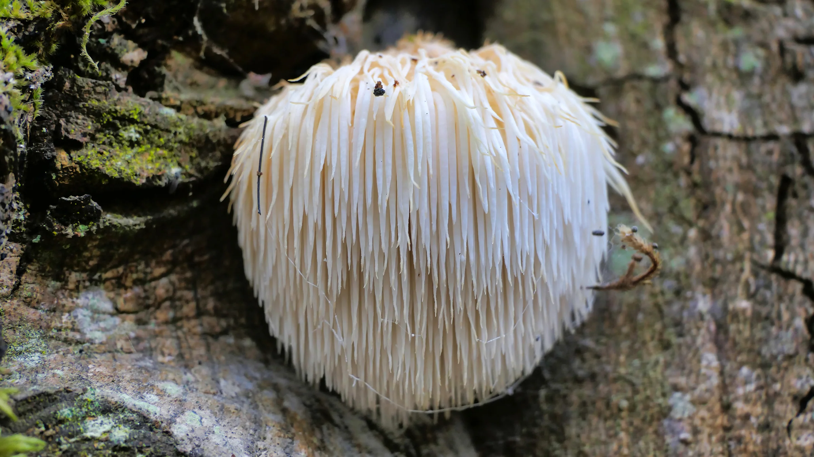

Hericium erinaceus
Common Name: Lion’s Mane
Lion’s Mane is a unique, white, shaggy mushroom resembling a lion’s mane. Found growing on hardwood trees, this mushroom is both edible and medicinal.
It belongs to the Toothed Fungi group, meaning it forms spines or “teeth” instead of gills or pores. This structure makes it visually stunning and easy to identify.
In culinary circles, it’s known for its seafood-like texture and flavor — often compared to lobster or crab. In herbal medicine, it's revered for its potential neuroprotective benefits, enhancing memory, focus, and mood.
Quick Facts:
- Genus: Hericium
- Species: erinaceus
- Type: Toothed
- Common Names: Lion's Mane, Bearded Tooth